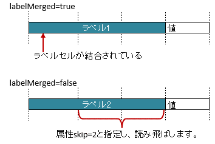

-
@Target(value={METHOD,FIELD}) @Retention(value=RUNTIME) @Documented @XlsFieldProcessor(value={}) public @interface XlsLabelledCell
ラベルセルを指定し、その左右もしくは下側のセルの値をマッピングします。基本的な使い方
属性
label()で、見出しとなるセルの値を指定します。属性
type()で見出しとなるセルから見て、設定されている位置を指定します。セルが見つからない場合はエラーとなりますが、属性
optional()を'true'とすることで無視して処理を続行します。@XlsSheet(name="Users") public class SampleSheet { @XlsLabelledCell(label="ラベル1", type=LabelledCellType.Right) private String title; // ラベルセルが見つからなくても処理を続行する @XlsLabelledCell(label="ラベル2", type=LabelledCellType.Bottom, optional=true) private String summary; }
基本的な使い方
ラベルセルを正規表現、正規化して指定する場合
シートの構造は同じだが、ラベルのセルが微妙に異なる場合、ラベルセルを正規表現による指定が可能です。
また、空白や改行を除去してラベルセルを比較するように設定することも可能です。正規表現で指定する場合、アノテーションの属性の値を
/正規表現/のように、スラッシュで囲みます。- スラッシュで囲まない場合、通常の文字列として処理されます。
- 正規表現の指定機能を有効にするには、システム設定のプロパティ
Configuration.setRegexLabelText(boolean)の値を trueに設定します。
ラベセルの値に改行が空白が入っている場合、それらを除去し正規化してアノテーションの属性値と比較することが可能です。
- 正規化とは、空白、改行、タブを除去することを指します。
- ラベルを正規化する機能を有効にするには、、システム設定のプロパティ
Configuration.setNormalizeLabelText(boolean)の値を trueに設定します。
これらの指定が可能な属性は、
label()、headerLabel()です。// システム設定 XlsMapper xlsMapper = new XlsMapper(); xlsMapper.getConfiguration() .setRegexLabelText(true) // ラベルを正規表現で指定可能にする機能を有効にする。 .setNormalizeLabelText(true); // ラベルを正規化して比較する機能を有効にする。 // シート用クラス @XlsSheet(name="Users") public class SampleSheet { // 正規表現による指定 @XlsLabelledCell(label="/名前.+/", type=LabelledCellType.Right) private String className; @XlsLabelledCell(label="コメント（オプション）", type=LabelledCellType.Right) private String comment; }- バージョン:
- 2.0
- 作成者:
- Naoki Takezoe, T.TSUCHIE
-
-
必須要素のサマリー
必須要素 修飾子とタイプ 必須要素と説明 LabelledCellTypetype見出しセルから見て値が設定されているセルの位置を指定します。
-
任意要素のサマリー
任意要素 修飾子とタイプ 任意要素と説明 ProcessCase[]cases適用するケースを指定します。StringheaderLabel同じラベルのセルが複数ある場合に区別するための見出しを指定します。Stringlabel見出しとなるセルの値を指定します。intlabelColumn見出しとなるセルの列番号を指定します。booleanlabelMergedラベルセルが結合している場合を考慮するかどうか指定します。intlabelRow見出しとなるセルの行番号を指定します。booleanoptionalセルが見つからなかった場合はエラーとなりますが、optional属性にtrueを指定しておくと、無視して処理を続行します。intrange属性type()の位置に向かって指定したセル数分を検索し、最初に発見した空白以外のセルの値を取得します。intskipラベルセルから指定したセル数分離れたセルを開始位置としてマッピングする際に指定します。
-
-
-
要素の詳細
-
type
public abstract LabelledCellType type
見出しセルから見て値が設定されているセルの位置を指定します。
-
-
-
optional
public abstract boolean optional
セルが見つからなかった場合はエラーとなりますが、optional属性にtrueを指定しておくと、無視して処理を続行します。falseを指定し、セルが見つからない場合は、例外
CellNotFoundExceptionがスローされます。- デフォルト:
- false
-
-
-
range
public abstract int range
属性type()の位置に向かって指定したセル数分を検索し、最初に発見した空白以外のセルの値を取得します。属性
range()とskip()を同時に指定した場合、まず、skip分セルを読み飛ばし、そこからrangeの範囲で空白以外のセルを検索します。この属性 は、 読み込み時のみ有効 です。書き込み時に指定しても無視されます。
@XlsSheet(name="Users") public class SampleSheet { @XlsLabelledCell(label="ラベル", type=LabelledCellType.Right, range=4) private String title; }
属性rangeの概要
- 戻り値:
- 値は1から始まり、指定しない場合は1を指定します。
- デフォルト:
- 1
-
-
-
label
public abstract String label
見出しとなるセルの値を指定します。システム設定により、正規表現による指定や正規化（改行、空白、タブの削除）による比較の対象となります。
- デフォルト:
- ""
-
-
-
labelRow
public abstract int labelRow
見出しとなるセルの行番号を指定します。labelColumn()属性とセットで指定します。この属性は、
XlsIterateTablesの中で指定したときに、処理内部で使用されるため、通常は設定しません。- 戻り値:
- 値は0から始まります。-1以下の負の値は無視されます。
- デフォルト:
- -1
-
-
-
labelColumn
public abstract int labelColumn
見出しとなるセルの列番号を指定します。labelRow()属性とセットで指定します。この属性は、
XlsIterateTablesの中で指定したときに、処理内部で使用されるため、通常は設定しません。- 戻り値:
- 値は0から始まります。-1以下の負の値は無視されます。
- デフォルト:
- -1
-
-
-
headerLabel
public abstract String headerLabel
同じラベルのセルが複数ある場合に区別するための見出しを指定します。属性
headerLabel()で指定されたセルから、属性label()で指定されたセルを下方向に検索し、 最初に見つかったセルをラベルセルとして使用します。システム設定により、正規表現による指定や正規化（改行、空白、タブの削除）による比較の対象となります。
@XlsSheet(name="Users") public class SampleSheet { @XlsLabelledCell(label="クラス名", type=LabelledCellType.Right, headerLabel="アクション") private String actionClassName; @XlsLabelledCell(label="クラス名", type=LabelledCellType.Right, headerLabel="アクションフォーム") private String formClassName; }
属性headerLabelの概要
- 戻り値:
- 見出しとなるセルを指定します。指定しない場合は空文字を指定します。
- デフォルト:
- ""
-
-
-
skip
public abstract int skip
ラベルセルから指定したセル数分離れたセルを開始位置としてマッピングする際に指定します。属性
type()の方向に向かってラベルセルから指定したセル数分離れたセルの値をマッピングすることができます。属性
range()とskip()を同時に指定した場合、まず、skip分セルを読み飛ばし、そこからrangeの範囲で空白以外のセルを検索します。@XlsSheet(name="Users") public class SampleSheet { @XlsLabelledCell(label="ラベル1", type=LabelledCellType.Right, skip=2) private String title1; @XlsLabelledCell(label="ラベル2", type=LabelledCellType.Bottom, skip=3) private String title2; }
属性skipの概要
- 戻り値:
- 値は0から始まります。0の場合は無視されます。
- デフォルト:
- 0
-
-
-
labelMerged
public abstract boolean labelMerged
ラベルセルが結合している場合を考慮するかどうか指定します。- 値がtrueのとき、結合されているセルを1つのラベルセルとしてマッピングします。
- 値がfalseの場合は、結合されていても解除した状態と同じマッピング結果となります。
初期値はtrueであるため、結合されているかどうかは特に意識はする必要はありません。
labelMerged()の値が falseのとき、ラベルセルが結合されていると、 値が設定されているデータセルまでの距離が変わるため、属性skip()を併用します。@XlsSheet(name="Users") public class SampleSheet { // labelMerged=trueは初期値なので、省略可 @@XlsLabelledCell(label="ラベル1", type=LabelledCellType.Right) private String title1; // labelMerged=falseで、ラベルが結合しているときは、skip属性を併用します。 @XlsLabelledCell(label="ラベル1", type=LabelledCellType.Right, labelMerged=false, skip=2) private String title2; }属性labelMergedの概要
- 戻り値:
- trueの場合、ラベルがセルが結合されていることを考慮します。
- 導入されたバージョン:
- 2.0
- デフォルト:
- true
-
-
-
cases
public abstract ProcessCase[] cases
適用するケースを指定します。- 戻り値:
- 何も指定しない場合は全てのケースに適用されます。
- 導入されたバージョン:
- 2.0
- デフォルト:
- {}
-
-